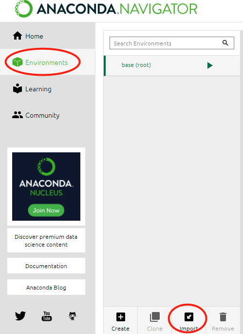
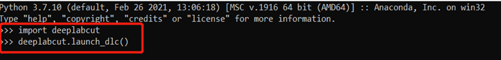
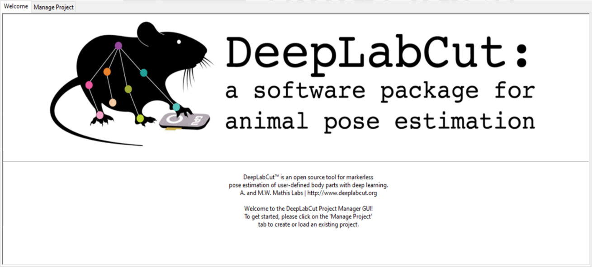

2. Installing DeepLabCut on your computer¶
a. Anaconda downloading and installtion¶
You can go to the website https://www.anaconda.com/products/individual and find the “Install Anaconda” button to download and install Anaconda.
b. Dowloading the conda config files for launching your environment¶
You can download appropriate DeepLabCut’s conda file from http://www.mackenziemathislab.org/deeplabcut

You also can download the appropriate file from these links below:
c. Creating your conda environment¶
When you completed to install Anaconda, you can open Anaconda Navigator on your PC and click the ‘Environments’ and click “Import” and select the Conda.yaml file you downloaded, and you can create your conda environment.

Once the environment has been imported, select it and click on the “Play” button, and select “Open with IPython” and open a terminal window.
In the terminal, type ‘import deeplabcut’ and type ‘deeplabcut.launch_dlc()’ to launch DeepLabCut’s GUI

